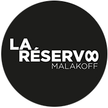
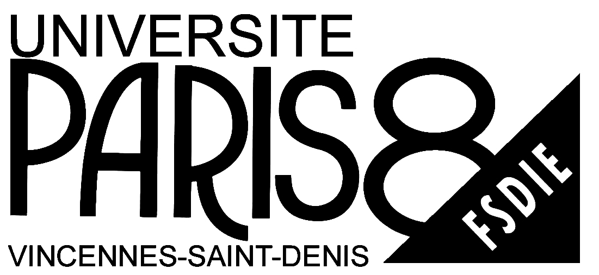

programme
CONCERTS EN EXTERIEUR
Deux temps de concerts viendront rythmer l’après-midi : une partie acoustique en début de journée, une partie électrique en deuxième partie du festival.
Nous vous attendons dès 12h pour un début de journée tout en douceur et en musique.
ACOUSTIQUE
12h30 Les Dubz
– le quatuor interprètera un répertoire de musiques traditionnelles
13h20 Louisa Rosi
– une voix jazz à en couper le souffle, accompagnée des mélodies de Guillaume Perrin
14h10 Miam
– on a encore faim et on est servis avec le duo guitare-voix bien trempé
ELECTRIQUE
15h40 Ishkero
– ouverture de la session électrique en beauté avec ce groupe de jazz fusion hallucinant.
17h Soul Flesh
– on garde le cap et on commence à battre du pied et à secouer la tête !
18h Black Ship Co
– soleil, bière et reggae : que demander de plus ?
19h La Mouche
– l’atmosphère s’électrise sur les rythmes endiablés
20h Achille’s Family
– bouquet final : le festival se terminera sur notre coup de cœur de l’année, à ne manquer sous aucun prétexte !
RESTAURATION :
Patchamama vous prépare un fastueux banquet, au menu : brochette de viandes, brochettes de légumes et cornets de frites.
Les membres du collectif Beat and beer cuisinent pour vous des brochettes de fruits, des tartes et des gâteaux en tout genre.
LE BAR :
De son côté, La Réserve vous propose des boissons artisanales : bière, vin, citronnade, thé glacé, café…
ACTIVITES EN EXTERIEUR
Beat and beer a prévu des activités pour les petits et les grands.
!!! Expliquer brièvement les activités
EXPOSITION DE STREET-ART
Si vous êtes curieux venez découvrir un hangar de 2000 m2 entièrement dédié au street art.
Tarif : 3 euros, gratuit pour les malakoffiots
INFOS PRATIQUES
BILLET D’ENTREE:
Plein tarif : 5 euros
Tarif réduit (-12 ans) : 3 euros
Les billets seront vendus uniquement sur place :
premiers arrivés, premiers servis !
ACCES :
La Réserve Malakoff.
7 rue Paul Bert 92240 Malakoff
Métro :
Malakoff Etienne Dolet, ligne 13
Malakoff Plateau de Vanves, ligne 13
Bus : Gabriel Péri – André Coin, lignes 126 et 191
Nous vous encourageons vivement à venir au festival à pied, à vélo ou en transports en commun.
Si vous ne pouvez éviter la voiture, il y a des places pour se garer à proximité du festival.
HORAIRES :
Le festival Beat and beer vous accueille de 12h à 22h pour une journée musicale pleine de surprises. Prévoyez d’être là tôt, nous attendons du monde !
RESTAURATION :
Beat and beer, Patchamama et La Réserve travaillent main dans la main pour vous faire passer une excellente journée autour de produits bio et de boissons artisanales, à prix doux !
LE PROJET
QU’EST-CE QUE BEAT AND BEER ?
Le festival Beat and Beer est un rendez-vous estival musical et artistique. Il a la particularité de changer de lieu au fil du temps ; il occupe temporairement un espace de la ville laissé à l’abandon, inoccupé ou bientôt détruit.
L'événement se déroule le temps d'une journée durant laquelle s’enchaînent plusieurs concerts de jeunes groupes émergents. Avec une programmation musicale de qualité riche et éclectique, nos choix musicaux embrassent un large champ esthétique qui reflète les principes fondateurs de l’association Beat and beer : création, transdisciplinarité et rencontres.
En plus d'une expérience sonore, Beat and Beer est une expérience esthétique grâce à une scénographie originale à partir de matériaux de récupération.
Beat and beer, c’est aussi un festival responsable. Pour minimiser l'impact écologique de celui-ci, nous mettons en place un tri des déchets afin d'inciter le public au recyclage. Nous proposons, pour la restauration et les boissons, des produits bio et/ou artisanaux afin de mettre en avant une consommation raisonnée.
QUI SOMMES-NOUS ?
 Beat and beer, c’est avant tout une bande de copain réunie par leur passion de la musique et l’envie de travailler ensemble en organisant un festival local, à taille humaine, favorisant la proximité et le dialogue entre ses différents acteurs, publics, musiciens et organisateurs. Après avoir réalisé 5 éditions dans le cadre privé nous avons décidé de partager notre passion avec un plus large public.
Beat and beer, c’est avant tout une bande de copain réunie par leur passion de la musique et l’envie de travailler ensemble en organisant un festival local, à taille humaine, favorisant la proximité et le dialogue entre ses différents acteurs, publics, musiciens et organisateurs. Après avoir réalisé 5 éditions dans le cadre privé nous avons décidé de partager notre passion avec un plus large public.
Majoritairement composée de Malakoffiots, notre association a pour objectif de faire vivre la ville dans laquelle nous avons grandi en proposant un projet dynamique. Ce nouvel événement culturel local vise à rassembler les habitants de Malakoff autour de la musique dans un contexte hors du quotidien.
PARTENAIRES
soutenir des valeurs communes
Nous souhaitons affirmer nos engagements en travaillant avec des partenaires dont nous aimons le travail. En 2016, nous sommes soutenus par :
LA RESERVE :
Un lieu de fête et d'art ouvre ses portes pour 5 mois avant démolition : 48 artistes investissent un hangar de 2000m2 pour le transformer en cathédrale d'art urbain. S'ouvre un temple de fête, de soirées, de rêve et de couleurs !
LA MAIRIE DE MALAKOFF :
Nous remercions notre mairie préférée qui a accepté de nous soutenir !
LE FSDIE DE PARIS 8 :
Lucile, Ambre, Guillaume et Gabin, membres de l’association Beat and beer et étudiants à l’Université Paris 8 Vincennes – Saint-Denis, ont obtenu l’aide du FSDIE qui a pour but de soutenir les arts et la culture.
PATCHAMAMA :
Bien connue des Malakoffiots, la boutique bio sera présente le 2 juillet pour assurer la restauration : attention aux papilles !
DEVENIR PARTENAIRE :
Si vous souhaitez nous soutenir et participer à l’aventure Beat and beer, veuillez téléchargez notre dossier partenaires ci-dessous :
CONTACT
NOUS CONTACTER :
Beat and beer est à votre écoute pour toute question :
associationbeatandbeer@gmail.com
Bénévoles
Vous avez envie de participer à l’aventure Beat and beer ?
Nous sommes à la recherche de bénévoles du lundi 27 juin au dimanche 3 juillet pour le montage, le démontage et le jour du festival. Joyeuse ambiance de travail garantie !
Merci de nous envoyer le formulaire ci-dessous complété à l’adresse associationbeatandbeer@gmail.com